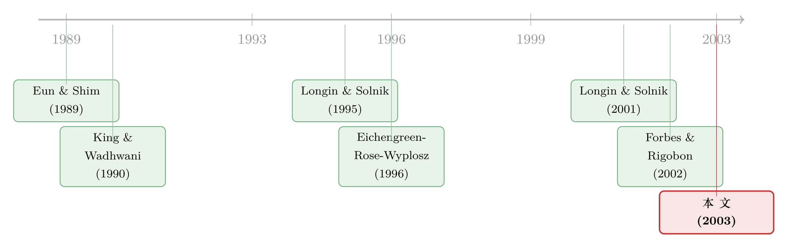

别再盯着相关系数了——用「一起暴跌」数出传染
本文读的是 Bae, Karolyi & Stulz (2003, Review of Financial Studies)：他们干脆抛开了「危机时相关系数是不是变高了」这个缠了二十年的老问题，转而去数——数同一天里有多少个国家一起跌进了尾部（他们叫 coexceedance），再用一个来自流行病学的 多项 logit (multinomial logistic regression) 模型，把这些「一起暴跌」中能被汇率、利率、波动率解释的部分剥掉，剩下的，才叫传染。结论是：传染可被预测，拉美比亚洲更「传染」，而美国，哪怕在 1997 年亚洲危机最凶的时候，也几乎对亚洲的冲击免疫。
1 一个被用错了二十年的工具
先从一个画面说起。1997 年 7 月，泰铢崩了。接着，几乎是肉眼可见地，马来西亚、印尼、韩国一个接一个倒下。媒体管这叫「亚洲流感」；再往前，是 1994 年墨西哥的「龙舌兰危机」；往后，是 1998 年的「俄罗斯病毒」。连名字都起得像传染病——contagion，韦氏词典的定义是「一种能通过直接或间接接触迅速传播的疾病」。
人们对这种「传染」的恐惧，几乎全都指向同一件事：有些极端的坏事，会引发恐慌、引发非理性、引发跨国的连锁暴跌。Stanley Fischer 用它替 1994 年的墨西哥纾困辩护，Bhagwati (1998) 说「资本流动充满了恐慌与狂热」，Stiglitz (1998) 借此呼吁管制资本流动。
可问题是，学术界拿来度量这种恐惧的工具，是相关系数。
这就拧巴了。首先，相关系数是一个对所有日子一视同仁的统计量——它把那些「什么都没发生」的平静日子，和那寥寥几天天崩地裂的暴跌，揉进同一个数里平均掉。可恐慌恰恰是个门槛现象：小幅的下跌不会传染，只有跌穿了某条线、击溃了某种心理防线的大跌才会。用一个给大小收益赋予相同权重的指标，去捕捉「大收益才有的差异」，本身就南辕北辙。
接着，更要命的是统计上的麻烦。一旦你条件在「危机期间」去算相关系数，它几乎注定会更高——这不是传染，这是数学。Forbes & Rigobon (2002) 那篇著名的《No Contagion, Only Interdependence》把这层窗户纸捅破了：危机期波动率飙升，而在波动率更高的子样本里估出来的相关系数本就向上有偏。于是你看到的「危机时相关性上升」，很可能只是一个估计偏误的幻影。也难怪这一支文献做到最后，结果一片混杂（关于这种「涨时各走各的、跌时一起跳水」的不对称该怎么干净地度量，可参见《涨时各走各的，跌时一起跳水：给「不对称」一把无关模型的尺子》）。
那么，一个自然的问题是：如果相关系数从根上就不对，该换成什么？
2 反转：不要算相关，去数「一起暴跌」
本文最关键的一步，是一次方法论上的「断舍离」——彻底放弃相关系数框架。
他们的替代品朴素得近乎固执：既然恐惧的是「大跌一起来」，那就直接去数大跌有没有一起来。具体地，先定义 超额事件 (exceedance)：某国某天的收益率，跌穿其边际分布的第 5 分位（或涨穿第 95 分位），就记一次。再定义 联合超额事件 (coexceedance)：同一天、同一地区内，有 \(i\) 个国家同时发生超额事件，就叫一次「\(i\) 元 coexceedance」。正负尾分开数。
为什么要「数」而不是「算相关」？因为一旦你去算大收益之间的相关，结果会被那么几个观测主宰，脆弱得很。数个数则稳健：它只问「今天有几个国家一起进了尾部」，不在乎进得有多深。
数出来的图景已经很有意思。样本是 17 个亚洲与拉美新兴市场，外加美国（S&P 500）和欧洲（Datastream 欧洲指数），1992 年 4 月到 2000 年 12 月，共 2283 个交易日。先看一组描述性事实：中国的日均收益最高（0.087%），巴西的日波动最大（3.370%，几乎是美欧的四倍）；最大的单日正向极值出现在巴基斯坦（58.70%），最大的负向极值是秘鲁（−41.90%）。所有新兴市场指数的标准差都高于美欧。
而 coexceedance 的分布，藏着第一个反直觉的发现。在亚洲，正尾和负尾大体是对称的：有 5 天出现「6 国及以上一起跌进负尾」，也有 7 天「6 国及以上一起冲进正尾」。在拉美则不然——7 国里有 7 天出现「6 国及以上同跌」，可正尾里这种「6 国同涨」只有区区 1 天。换句话说，拉美的极端事件明显偏向「一起跌」，亚洲却涨跌都一起来。还有个耐人寻味的细节：在亚洲六国以上同时出现极值的那些日子里，绝对值平均收益，正向（7.47%）反而比负向（−7.08%）还大——所谓「危机国一定跌得最惨」，并不总成立。
但这里立刻冒出一个老对手：你数出来这么多「一起暴跌」，会不会仅仅是因为这些市场本来就相关？在一个有共同因子的世界里，大收益天然更容易同时出现大的共同因子实现值——这跟「恐慌传染」是两码事。
3 校准：先问「如果只有共同因子，会数出多少」
要回答这个问题，本文用 蒙特卡洛模拟 (Monte Carlo simulation) 做了一次校准。逻辑很干净：假设协方差矩阵在整个样本期是平稳的、收益服从某个固定的联合分布，那么在这个「没有传染、只有恒定相依」的世界里，纯靠运气，我们应该数出多少次 coexceedance？
他们模拟了 5000 条、各含 2283 天的收益序列，用同一套非参数计数法去数，得到 coexceedance 的一个「零假设分布」，再拿真实样本去对照。为了不被分布假设绑架，他们试了三种设定：多元正态、能容纳厚尾的多元 Student-\(t\)（自由度设为 \(N+K-1\)），以及更贴近现实的带 GARCH 结构的过程。
这一步是整篇文章在逻辑上的「锚」：它把「市场本就相关」这条平庸解释，先用模拟挡在门外。只有当真实的多国同跌显著超出模拟分布所能产出的频率时，才轮到「传染」这个词登场。
4 模型：把流行病学的尺子搬进金融
挡掉了「纯相关」，下一步是建模。本文的方法论灵感，明白地写着是借自流行病学——Hosmer & Lemeshow (1989) 那本《Applied Logistic Regression》。在流行病学里，多项 logit 回答的是这样的问题：已知 \(N\) 个人被某种病感染了，再有 \(K\) 个或更多人被传染的概率有多大？把「人」换成「国家」，把「被传染」换成「跌进尾部」，问题的结构一模一样。
于是被解释变量，就是某地区某天的 coexceedance 个数 \(Y_t\)，取 \(0, 1, 2, \dots, m\) 这样一组有序但被当作多类别的取值（以「无任何国家超额」为基准类别 0）。多项 logit 给出每一类别的概率：
$$ P(Y_t = j \mid X_t) = \frac{\exp(\beta_j' X_t)}{1 + \sum_{i=1}^{m}\exp(\beta_i' X_t)}, \qquad j = 0, 1, \dots, m $$
其中基准类别满足 \(\beta_0 = 0\)。把它整理成相对基准的对数几率（log-odds），就得到本文真正要估的那个核心方程——也是理解「传染」如何被识别出来的钥匙：
读懂这个方程，就读懂了整篇文章的识别逻辑。它的妙处在于把「传染」定义成了一个可被估计、可被检验的残差：
- 区域内传染：把本地区的协变量 \(Z_t\)（汇率变动、利率水平、本地区股市的条件波动率，后者用 EGARCH 估出）放进去，能被这些基本面解释掉的同跌，就不算传染；剩下那部分无法被 \(Z_t\) 解释的 coexceedance，才是传染。
- 跨区域传染：再把另一个地区的 coexceedance 计数 \(C_t^{R'}\)（当天的，或前一天的——因为亚洲先开盘、美洲后收盘，时点必须对齐）塞进右边。如果在控制住本地区基本面之后，\(\gamma_j\) 仍然显著为正，那就意味着「别人那边一起暴跌」本身，预测了「我这边也会一起暴跌」——这才是干净意义上的、跨越地理的传染。
相比那些基于 极值理论 (extreme value theory, EVT) 的同类做法，这套多项 logit 最大的好处，正是这个「能条件在协变量上」的能力：它不只是问「尾部相依有多强」，而是能进一步问「这种相依，有多少能被可观测的基本面讲清楚，又有多少是讲不清的传染」。
5 它数出了什么
把这台机器开起来，几个结论值得记住。
第一，传染是可预测的。 coexceedance 的发生，系统性地依赖于区域利率水平、汇率变动、以及股市的条件波动率——这是摘要里反复强调的一句话。也就是说，「一起暴跌」并非晴天霹雳，它和事前可观测的宏观—金融状态绑在一起。这一点本身就对「传染纯粹是非理性恐慌」的叙事构成了温和的反驳。
第二，传染的强度因地区而异，拉美远比亚洲「传染」。 在控制掉协变量之后，拉美区域内剩下的、无法解释的同跌，明显多于亚洲。并且方向上也不同：亚洲的正、负极端同样会传染，拉美却是负向更传染——阿根廷、智利、墨西哥几乎出现在每一次「5 国及以上同跌」的事件里，而哥伦比亚则相反，它有着不成比例的「独自超额」（371 次单国超额里占了 73 次，448 次单国正尾里占了 86 次），像个游离在外的独行侠。
第三，也是最漂亮的一击——美国对亚洲传染几乎免疫。 即便在 1997 年亚洲危机最汹涌的时候，亚洲那边的 coexceedance 也预测不了美国跟着一起跌。本文原话是「the United States seems completely insulated from any Asian contagion」。这与他们更早关于信息传导的工作遥相呼应：美国的喷嚏会传到亚洲，亚洲的喷嚏却传不回美国（顺带一提，这种「冲击为何转瞬即逝」的另一面，可参见《美国打个喷嚏，首尔和曼谷为什么只抖三十分钟？》）。
第四，关于「负向是否比正向更传染」的不对称，证据是混杂的。 拉美支持（负尾更易同跌），亚洲不支持（正负对称）。本文很诚实地没有把这条讲成普适规律。
6 文献脉络
把这篇文章放回它的坐标系，会更清楚它「断」在了哪里、又「续」上了哪里。
最早的一支，是国际市场间的溢出研究：Eun & Shim (1989) 用 VAR 追踪股市波动如何跨国传导，Hamao, Masulis & Ng (1990)、King & Wadhwani (1990) 则盯住波动率的跨市场传染。这一支关心的是「信息怎么传」，本文作者之一也早早入局（Bae & Karolyi, 1994）。
接着是相关系数会不会变这条主线：King, Sentana & Wadhwani (1995)、Longin & Solnik (1995) 反复追问「国际股票相关性是不是恒定的」，答案是会变，但变得难以解释。等到危机叙事兴起，Forbes & Rigobon (2002) 给这条线泼了盆冷水——危机期相关性上升大半是偏误，「没有传染，只有相依」。

与此平行的，是极值这一支：Longin (1996) 推导极端收益的渐近分布，Longin & Solnik (2001) 干脆去算「极端波动期的极端相关」。还有一条看似无关、却被本文挑明为「先声」的——Eichengreen, Rose & Wyplosz (1996) 用 probit 把「一国是否爆发货币危机」回归到一组预测变量上。本文坦承这是其方法的前身，但与之不同的是，它的焦点是极端事件跨国联合发生的概率，而非单国危机本身。
本文（2003）的位置，就在这几条线的交汇处：它接过了「危机时该关注极端而非平均」的极值直觉，又把 Eichengreen 等人的「危机预测回归」升级为对多国联合极端的多项 logit 建模，同时用流行病学的语言，把「传染」第一次落成了一个可估计的残差。沿着「一起崩到底是规律还是错觉」这条问题再往后走，会通向更精细的尾部相依度量（可参见《市场一起崩，是规律还是错觉？——给「尾部相依」装一把会区分的尺子》）。
评论与延伸（Q&A + 研究方向）
(a) 几个可能的疑问
Q：「coexceedance」和「危机时相关性上升」到底有什么本质区别？
区别在「条件在哪里」。相关系数上升这件事，本身就被波动率上升污染——你越是条件在危机期，越会自动看到更高的相关。coexceedance 走的是另一条路：先用蒙特卡洛把「纯共同因子能产生多少同跌」算清楚作为基准，再看真实数据超出多少；并且在 logit 里显式控制住波动率、汇率、利率这些基本面，剩下的才叫传染。它度量的是「计数的超额」，不是「二阶矩的变化」。
Q：把 5%/95% 分位当成「极端」的门槛，是不是太随意？
作者自己也承认这是 arbitrary 的，所以做了稳健性：换用不同尾部大小，并用 EGARCH 的条件波动率构造「条件意义上的极端」来替代无条件分位数。方法论上这是必要的——固定 5% 门槛在高波动期会「太容易」触发，条件化能缓解这个问题。
Q：多项 logit 把 coexceedance 当「类别」，可它明明是有序的（2 国 < 3 国 < 4 国），这样不浪费信息吗？
是个真问题。把有序变量当无序多类别处理，确实损失了「序」的结构，但好处是不强加 比例几率 (proportional odds) 假设——而这个假设在这类数据上常被拒绝。代价是参数更多、自由度更紧。这是一处可以再推敲的建模取舍。
Q：用「另一地区的 coexceedance」当协变量来识别跨区传染，会不会有反向因果或共同冲击的问题？
这是识别上最该担心的地方。他们靠时点对齐来缓解（亚洲先开盘，所以用亚洲当天去预测拉美/美国当天或次日，方向上较干净）。但一个同时砸向两地的全球共同冲击，仍可能被误读成「传染」。严格说，这套设计识别的是「条件预测力」，离结构意义上的因果还有距离。
Q：美国「免疫」于亚洲传染，是不是只是因为样本期里美国正好没出事？
部分是。样本覆盖 1997 亚洲、1998 俄罗斯两次危机，对识别有利；但它不含 2008。一个把雷曼时刻纳入的样本，很可能会改写「美国免疫」这个结论——这恰恰提示了该结论的样本依赖性。
Q：这套方法能不能搬到股票之外、比如公司债或外汇？
原则上完全可以，而且很自然。coexceedance 本质上只需要「一组资产的日收益」和「一个尾部门槛」，对公司债的利差跳变、对货币的极端贬值，逻辑一模一样。难点在于公司债日频数据的质量与停报问题——零收益会污染分位数的估计。
(b) 几个可能的研究问题与提案
1. 把 coexceedance 搬进公司债信用市场。 【经济故事】危机里真正「一起暴跌」的，往往不是股票而是信用利差——同一天里一批债券同时被砸穿尾部，正是流动性枯竭与抛售传染的指纹。把本文的多项 logit 直接套到债券利差变动上，能度量「信用传染」有多少可被宏观基本面解释、多少是纯传染。 【可行性】中。数据可用 TRACE + ICE/Markit 利差，识别策略沿用本文（控制利率、波动率、资金面，再放入其他评级桶/行业的 coexceedance）。主要障碍是债券交易稀疏导致的尾部估计噪声，需要用 size-adapted 的流动性度量配合。
2. 外资持有人是传染的「导管」还是「缓冲」？ 【经济故事】很多传染叙事都把矛头指向外国投资者的羊群式撤离。把 coexceedance 的强度，回归到各市场的外资可投资度（investability）/外资持股比例上，能直接检验「外资越多的市场，是否更容易卷入跨国同跌」。 【可行性】中高。本文用的正是 IFC「可投资指数」，外资可投资度数据现成；可做面板，用指数可投资度的制度性调整作为外生变化来源。识别上比纯时序更干净。
3. 把 2008 与 2020 纳入，重估「美国免疫」。 【经济故事】本文最醒目的结论之一是美国对亚洲传染免疫，但样本止于 2000。一个延伸到 GFC 与 COVID 的更新样本，能检验这种「免疫」是结构性的，还是 1990 年代的特例。 【可行性】高。数据完全可得，方法照搬即可，几乎是一篇干净的「复制 + 延伸」。诚实地说，可发表性取决于结论是否真的反转。
4. 用高频日内数据给传染的「方向」定时。 【经济故事】日频数据只能说「同一天一起跌」，分不清谁先谁后。用日内分钟级数据，可以把 coexceedance 的发生排序，真正区分「领先—滞后」的传导链条。 【可行性】中。新兴市场的高频数据获取与清洗成本高，时区与开盘时间错位需要小心处理，但方法论上是本文的自然升级。
参考文献
- Bae, K.-H., Karolyi, G. A., & Stulz, R. M. (2003). A New Approach to Measuring Financial Contagion. Review of Financial Studies 16(3), 717–763.
- Bae, K.-H., & Karolyi, G. A. (1994). Good News, Bad News and International Spillovers of Stock Return Volatility Between Japan and the U.S. Pacific-Basin Finance Journal 2, 405–438.
- Eichengreen, B., Rose, A., & Wyplosz, C. (1996). Contagious Currency Crises: First Tests. Scandinavian Journal of Economics 98, 463–484.
- Eun, C. S., & Shim, S. (1989). International Transmission of Stock Market Movements. Journal of Financial and Quantitative Analysis 24, 241–256.
- Forbes, K., & Rigobon, R. (2002). No Contagion, Only Interdependence: Measuring Stock Market Co-movements. Journal of Finance (forthcoming).
- Hamao, Y., Masulis, R. W., & Ng, V. (1990). Correlations in Price Changes and Volatility Across International Stock Markets. Review of Financial Studies 3, 281–308.
- Hosmer, D., & Lemeshow, S. (1989). Applied Logistic Regression. Wiley, New York.
- King, M. A., & Wadhwani, S. (1990). Transmission of Volatility Between Stock Markets. Review of Financial Studies 3, 5–33.
- King, M., Sentana, E., & Wadhwani, S. (1995). Volatility and Links Between National Stock Markets. Econometrica 62, 901–933.
- Longin, F. M. (1996). The Asymptotic Distribution of Extreme Stock Market Returns. Journal of Business 69, 383–408.
- Longin, F. M., & Solnik, B. (1995). Is the Correlation in International Equity Returns Constant: 1970–1990? Journal of International Money and Finance 14, 3–26.
- Longin, F. M., & Solnik, B. (2001). Extreme Correlations of International Equity Markets During Extremely Volatile Periods. Journal of Finance 56, 649–676.